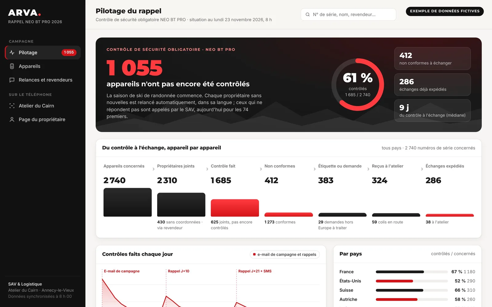
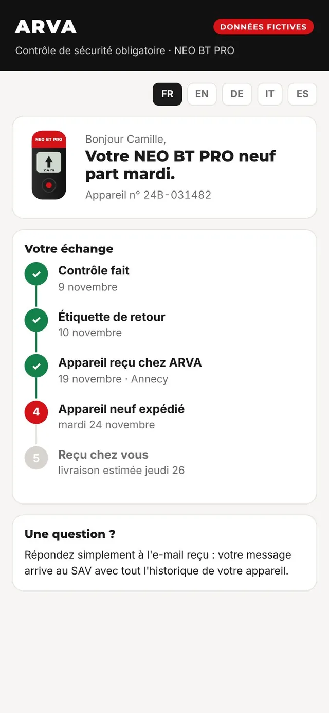
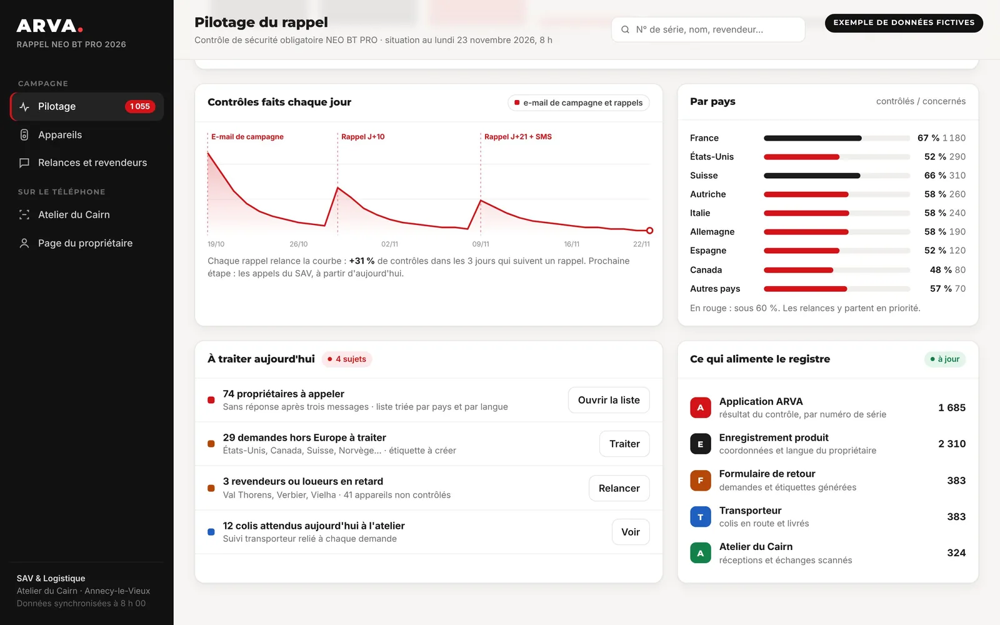
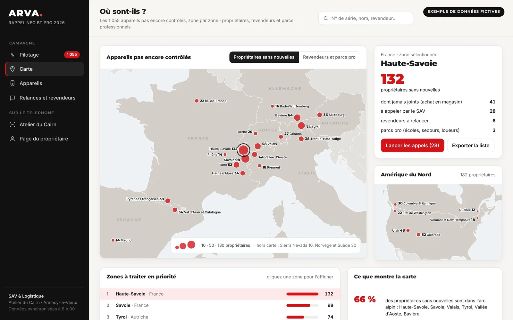
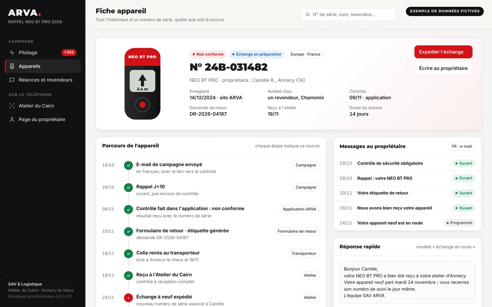
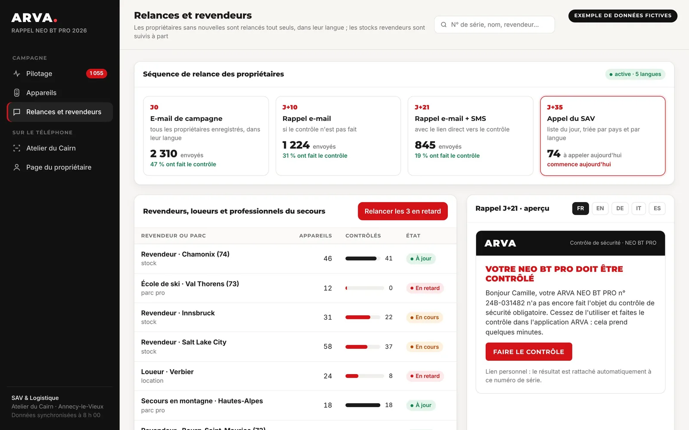
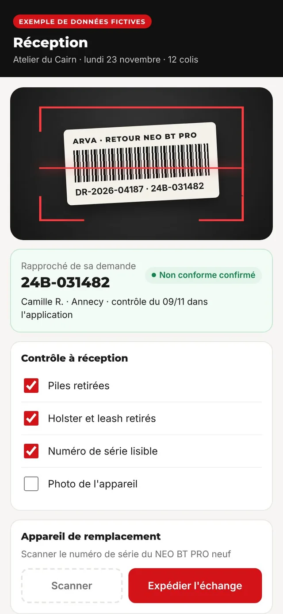

Concept pour ARVA · rappel NEO BT PRO
Chaque NEO BT PRO suivi, du contrôle à l'échange.
Un outil sur mesure pour piloter la campagne de contrôle de sécurité : où en est chaque appareil, qui relancer, ce qui arrive à l'atelier, et une page de suivi pour chaque propriétaire, dans sa langue.
Concept réalisé à partir de ce qui est visible publiquement. Toutes les données affichées sont fictives.


Un contrôle à faire dans l'application ARVA, un formulaire par numéro de série, et un échange à neuf pour les appareils non conformes.
Savoir à tout moment quels appareils n'ont pas été contrôlés, relancer dans plusieurs pays et plusieurs langues, suivre chaque colis.
Un registre unique, alimenté par vos outils actuels, qui relance, trace et informe à votre place.
Toute la campagne, appareil par appareil
Combien de NEO BT PRO restent à contrôler, dans quels pays, et où en est chaque appareil, du contrôle à l'échange expédié.
- Le parcours complet, des propriétaires joints aux échanges expédiés
- L'effet de chaque relance, jour après jour
- Chaque matin, la liste de ce qui est à traiter

Où sont les appareils pas encore contrôlés ?
Zone par zone, en Europe et en Amérique du Nord : les propriétaires sans nouvelles, les revendeurs et les parcs professionnels à relancer.
- Les zones prioritaires d'un coup d'œil, de la Haute-Savoie au Colorado
- Un clic sur une zone : la liste à appeler et les revendeurs concernés
- Des relances ciblées par région et par langue

Chaque numéro de série a son histoire
Application ARVA, enregistrement produit, formulaire de retour, transporteur, atelier : chaque étape arrive dans la fiche avec sa source.
- Le SAV répond à « où en est mon appareil ? » en quelques secondes
- Tous les messages envoyés au propriétaire, ouverts ou non
- Des réponses toutes prêtes, à relire et à envoyer

Des relances qui partent seules, dans 5 langues
E-mail de campagne, rappels à J+10 et J+21, puis une liste d'appels pour le SAV quand rien ne bouge. Le contrôle fait, la relance s'arrête.
- Français, anglais, allemand, italien, espagnol
- Revendeurs, loueurs et professionnels du secours suivis à part
- Chaque message porte un lien personnel, rattaché au numéro de série

Un scan à l'atelier, une page pour le propriétaire
À l'Atelier du Cairn, un scan rapproche le colis de sa demande ; un second associe l'appareil neuf au propriétaire. Lui suit son échange étape par étape.
- Contrôle à réception sur téléphone : piles, holster, leash
- Le propriétaire est prévenu à chaque étape, sans ressaisie
- Moins d'e-mails et d'appels de relance au SAV

Comment ça se branche
Vos outils restent en place. Le registre les relie.
Rien n'est à ressaisir : l'outil se branche sur ce qui existe déjà et supprime les doubles saisies. Le détail des branchements se vérifie ensemble, outil par outil.
On commence par ce qui vous fait gagner le plus de temps
Le registre
Tous les numéros de série et leur statut, alimentés par vos fichiers et l'application.
Les relances
Les séquences par langue, arrêtées dès que le contrôle est fait.
L'atelier
La réception et l'échange sur téléphone, le propriétaire prévenu.
La page propriétaire
Le suivi de l'échange, pour moins de demandes au SAV.
Un outil construit autour de votre campagne
Ce concept est un point de départ : chaque écran s'adapte à votre organisation, à votre vocabulaire et à vos outils, et se teste en conditions réelles avant d'aller plus loin.